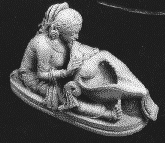
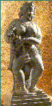
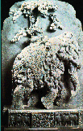
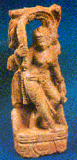
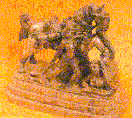
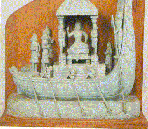
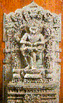
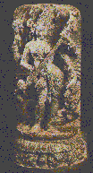
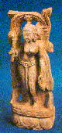

A Rich Legacy Of An Ancient Culture
 Legends lace Orissa. Temples dot her landscape. On her streets Gods walk among men. Famous for the beauty and craftsmanship of Konark, Jagannath, Lingaraja and innumerable other temples, Orissa offers a striking selection of decorative and utilitarian arts and crafts. Visual manifestations of a millenium of Orissan culture, these arts and crafts embody and reflect a tradition which still lives in the creative imagination and skill of her craftsmen.
Legends lace Orissa. Temples dot her landscape. On her streets Gods walk among men. Famous for the beauty and craftsmanship of Konark, Jagannath, Lingaraja and innumerable other temples, Orissa offers a striking selection of decorative and utilitarian arts and crafts. Visual manifestations of a millenium of Orissan culture, these arts and crafts embody and reflect a tradition which still lives in the creative imagination and skill of her craftsmen.
A Collector's Delight:
Look at any handicraft of Orissa. The applique works of Pipili or Patachitras and Papier Mache masks of Puri: Silver Filigree jewellery and golden grass mats of Cuttack or 'Katki' and Ikkat sarees of Cuttack and Sambalpur or Dhokra and clay toys of Mayurbhanj and Barapali and Lacquer work of Nawrangpur or Horn work of Parlakhemundi or the flexible brass fish of Ganjam, each handicraft exudes a charm and originality of its own and pristine beauty that remained untouched by time. The beauty and charm of Orissi handicrafts mirrors a heritage in its past and present flowing into eternity.

STONE SCULPTURE: The Ancient Tradition Continues...

Jeevana delu Pasane !
Rakhi jati mana dei mana prana !
O' artisan, genius of a man !
Look at your lustrous creation .
You speak poetry with your tools ,
You give life to a structure of stone !
O' artisan, genius of a man !
You are the pride of my nation !
Stone carving of Orissa reflects the grandeur of a rich heritage. Anyone who has taken even a cursory look at any single Orissan temple or monument will realize that this is a land of sculptural genius. The early designation of parts of Orissa as Utkal ('land of excellence of art') was no doubt due to the brilliance of both of her architectural and sculptural traditions. It was evolved over centuries by craftsmen who are descendents of the great builders of the famous temples of Lingaraja, Jagannath and Konark where mute stones have been transformed to living expressions of multi facets of human life.
The third century B.C. carved elephant at Dhauli, and the sculptured friezes and other decorations at the Khandagiri/Udayagiri caves of the first century B.C are the first indications we have of a strongly developed tradition.

The excavation at the major Buddhist sites at Lalitagiri, Ratnagiri and Udayagiri
have recently unearthed inscriptions which seem to take the history of the site
back to still earlier centuries about which we had, until recently, very little
knowledge. Our hope is that the light may be shed on the five or six centuries
from which we have no material remains.
From the sixth century onwards, however, Orissa produced a wealth of sculptural
treasure. Images which were removed from temples and Buddhist ruins in Orissa
are in major museums throughout the world, amply demonstrating that the
sculptors of Orissa ranked among the best in India, and the world.
The tradition continues today in the nimble fingers of the stone carvers who
replicate the beauty of the sculpture.

From Soap-Stone, 'Kochila' (a hardstone), sand stone and
serpentine stone, stone carvers capture smaller replicas of Lingaraja and
Konark temple walls, with superb finessee.


More than artistic delights the stone artefacts had other usages too. They
preserved the history of the land with its social and economic landscape.
Thus while the rearing horse bestride the fallen hero tells the story of a

heroic exploit on the battlefield, the five oared boat recounts the proud
maritime history of Orissa. They recall a period when riches from far off lands
landed at her ports, and daring merchants like the one here, scoured the world
and spread the message of Indian civilization.

The majestic stone statue of Nrishingha, avatar of Vishnu
recreates the destruction of the evil demon killed by Nrishingha with
his nails, after placing him on his lap in a mythical allegory.

Even today the stone carvers with the same dextirity cater to the needs of
modern living. Ash trays, bowls and vases, and containers are turned out by
families in Puri, Bhubaneswar, Lalitgiri, Khiching and elsewhere. The Puri
sculptors still live and work in charming painted houses on Pathuria Sahi
, utilizing their ancient skills to produce contemporary work on commission,
occasionally finding a patron who wants a traditional piece, and training their
sons and grandsons to follow in their footsteps. In addition to Pathuria Sahi
, Puri has the very interesting Sudarshan Crafts Center, where a
nationally recognized sculptor has established a gallery and an apprentice
training workshop.


The stone images of Orissa give a touch of distinction to modern decor, that few present embellishments can hope to surpass. They are a timeless reflection of glorious tradition, an unfinished story in stone.

.
Region
- Puri
- Lalitagiri
- Bhubaneswar
- Khiching
Image Support : Manish Desai
Text Support : Susanta Mohanty, Dr. Bijoy Mishra, Somdutt Behura